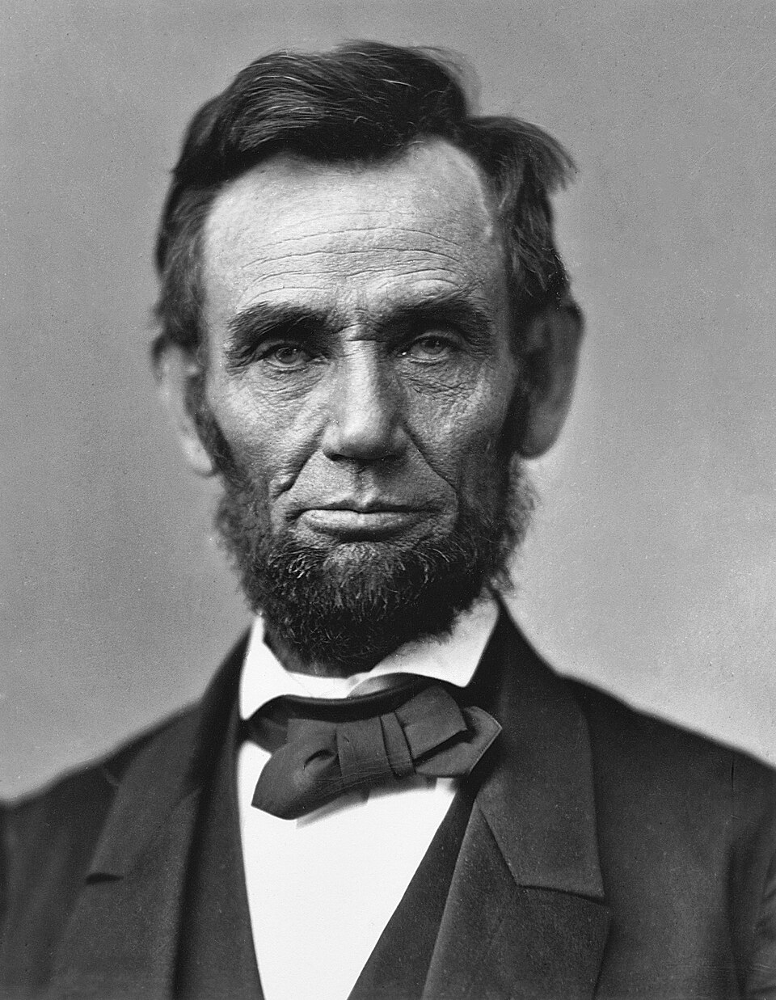

O Captain, My Captain
O Captain! my Captain! our fearful trip is done, The ship has weather’d every rack, the prize we sought is won, The port is near, the bells I hear, the people all exulting, While follow eyes the steady keel, the vessel grim and daring; But O heart! heart! heart! O the bleeding drops of red, Where on the deck my Captain lies, Fallen cold and dead. O Captain! my Captain! rise up and hear the bells; Rise up—for you the flag is flung—for you the bugle trills, For you bouquets and ribbon’d wreaths—for you the shores a-crowding, For you they call, the swaying mass, their eager faces turning; Here Captain! dear father! This arm beneath your head! It is some dream that on the deck, You’ve fallen cold and dead. My Captain does not answer, his lips are pale and still, My father does not feel my arm, he has no pulse nor will, The ship is anchor’d safe and sound, its voyage closed and done, From fearful trip the victor ship comes in with object won; Exult O shores, and ring O bells! But I with mournful tread, Walk the deck my Captain lies, Fallen cold and dead.
Importance historique:

Ce poème a été écrit propos de la mort du président américain Abraham Lincoln